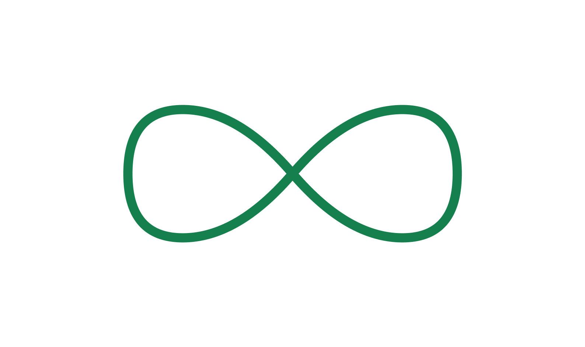
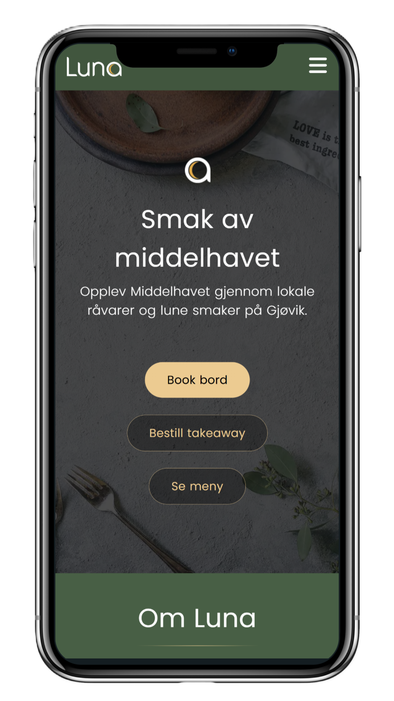
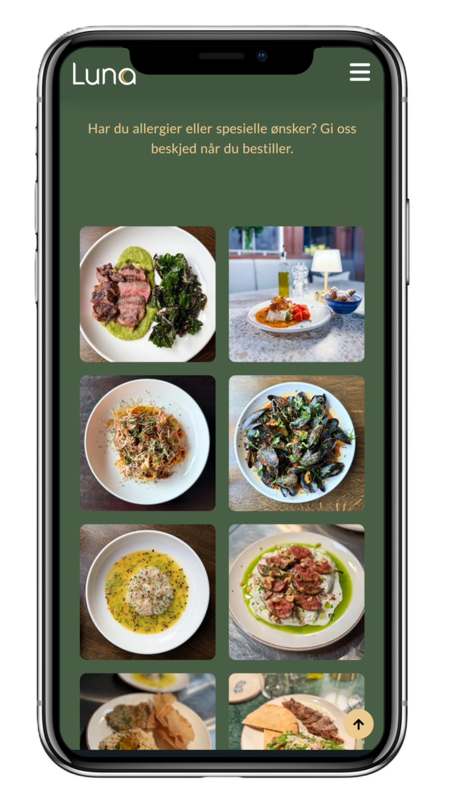
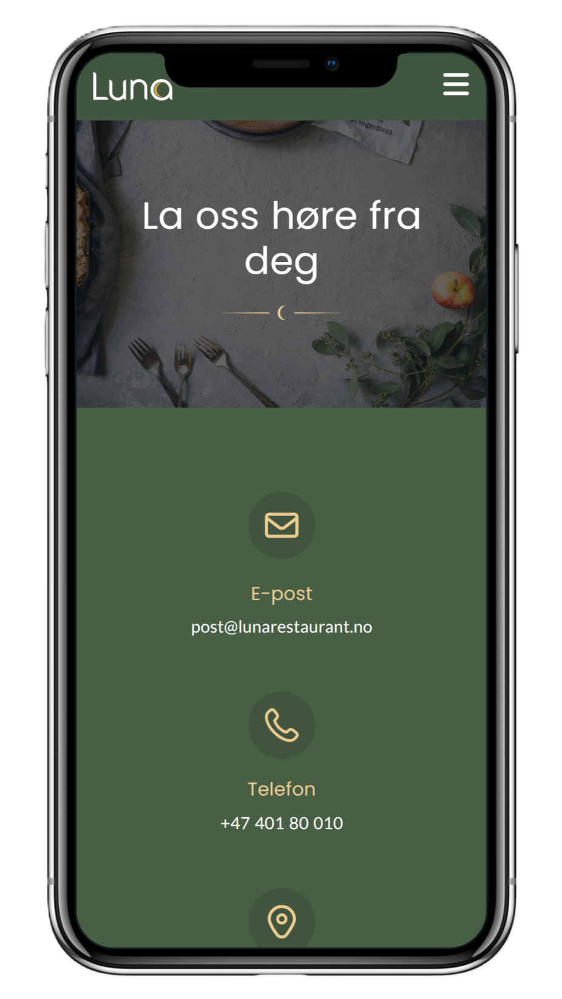
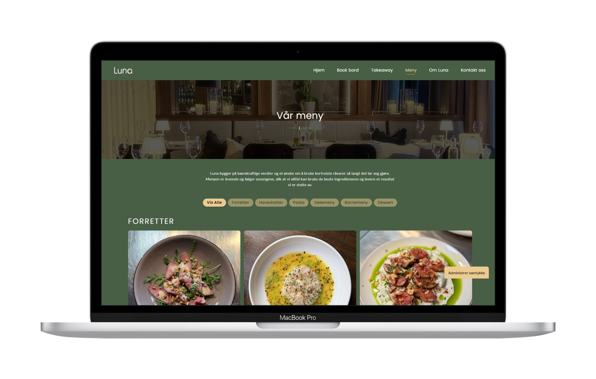

Designprosessen
Siden restauranten var i en oppstartsfase, var prosessen preget av tett dialog med eierne og raske iterasjoner. Jeg kombinerte innsikt fra brukertesting med løpende tilbakemeldinger for å sikre at vi traff målgruppen. Jeg la stor vekt på å bygge en løsning som var brukervennlig for oppdragsgiver. Ved å strukturere WordPress-løsningen slik at de selv kan oppdatere menyer og endre innhold.
Metoder og verktøy
Jeg tegnet først ut designet i Figma før jeg bygde det i WordPress. Siden jeg er vant til å skrive kode med HTML og CSS, var det en overgang å bruke et ferdig system. Det var uvant å jobbe i et ferdig WordPress-oppsett der man ikke har full kontroll på kildekoden. Jeg innså underveis at ting som ARIA-labler og "skip to main"-lenker krever en annen tilnærming her, og dette er noe jeg jobber med å lære meg og implementere for å få siden helt i mål på tilgjengelighet.

Løsningen
Nettsiden er restaurantens viktigste kontaktpunkt før gjestene i det hele tatt har satt seg ved bordet. Målet har vært å skape en digital flate som gjør det brukervennlig og intuitivt å bestille bord og se på menyen.
- Bookingknappen er fremhevet i primærfargen
- Enkel oppdatering av sesongmeny
- Integrert bestillingsflyt
Nettsiden er designet for å prøve å fjerne unødvendige steg i gjestereisen. Ved å bruke en tydelig kontrastfarge på bookingknappen, leder vi gjesten intuitivt til reservasjon uten at de trenger å lete. Selve bookingskjema er integrert gjennom en ekstern aktør, men er prøvd å implementeres slik at flyten fortsatt beholdes.



Per nå er menyene lagt inn som en PDF, noe som gir kunden en rask og enkel måte å oppdatere innholdet selv. Som et alternativ har jeg også utarbeidet en annen løsning med filtrering som er mer egnet for søkemotoroptimalisering. Siden søkemotorer har lettere for å lese tekst enn dokumenter, vil en slik struktur bidra til at restauranten blir mer synlig når folk søker etter spesifikke retter på nett. Denne løsningen er laget som et forslag til hvordan man kan ta steget videre fra PDF-en for å maksimere synligheten i søkeresultatene.

Hva har jeg lært fra dette prosjektet
Dette prosjektet har gitt meg verdifull innsikt i hvordan man balanserer kundens behov for enkel administrasjon med tekniske krav til synlighet og tilgjengelighet. Noen av de viktigste erfaringene er:
- Tett samarbeid med kunden
- Erfaring med implementering av design i WordPress
- Håndtering av universell utforming i nye rammeverk
- Forståelse av søkemotoroptimalisering
Det har vært lærerikt å identifisere tekniske mangler og finne praktiske metoder for å løse disse i et nytt rammeverk. Jeg har også tilegnet meg mer kunnskap om SEO og hvordan tekniske valg påvirker restaurantens synlighet på nett. Ved å utforske forskjellen mellom enkle PDF-løsninger og tekstbaserte menyer, har jeg lært hvordan man kan lage en nettside for å tiltrekke seg flere gjester gjennom søkemotorer.